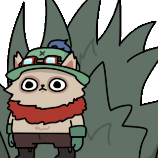
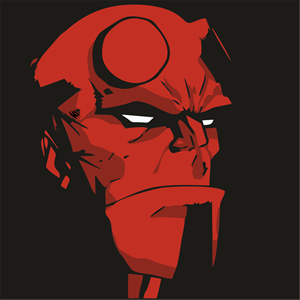

·Holaaaaa soy Ismael Alberto Corpuna Puza, estudiante de la carrera de Computer Science y esta es mi primera página web uwu, tengo 18 años y espero que disfruten esta pequeña introducción de mi persona. Nací el 6 de Agosto del 2002 en El Hospital Nacional Edgardo Rebagliati Martins, vivo en Lima(Perú), estudié en el colegio Rvdo. Hno. Gastón María y actualmente estudio en la Universidad San Ignacio de Loyola.

MIS GUSTOS:
VIDEOJUEGOS
ILUSTRACIÓN
ANIMACIÓN
Desde pequeño siempre
me han gustado
los videojuegos, más que todo de
la compañía Nintendo pero últimamente
he estado más concentrado en juegos
de PC como Minecraft o League of Legends.
Me encanta el arte, de pequeño tenía muchos cuadernos de dibujo y en la escuela siempre paraba dibujando, incluso cree mi propia historieta y me he propuesto a ser un gran ilustrador.
Este gusto surgió a partir de una serie de videos de un videojuego y me llamó mucho la atención el cómo se hace una cinemática, uno de mis planes a futuro es hacer una buena animación casi como estas 1, 2, 3.

MIS METAS:
·Terminar cursos en diversos tipos de arte como el baile, la música, la actuación, la pintura, el dibujo, etc. Aunque mi nerviosismo me puede hacer pasar un mal momento siempre intento dar lo mejor de mi.
·Crear una página de ayuda para las personas con depresión y baja autoestima que no tienen forma de recibir atención psicóloga
·Terminar mi carrera de computer science y también convertirme en un gran ilustrador y animador.